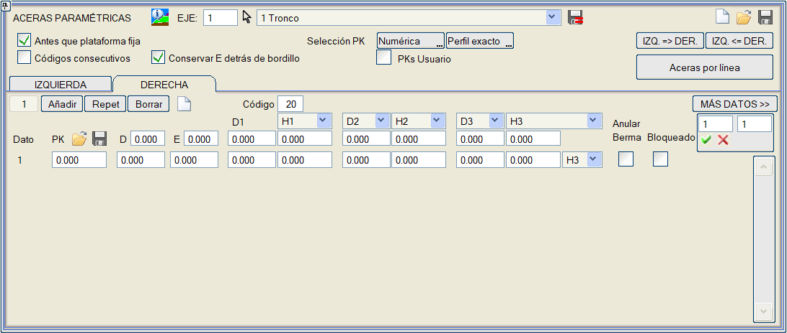
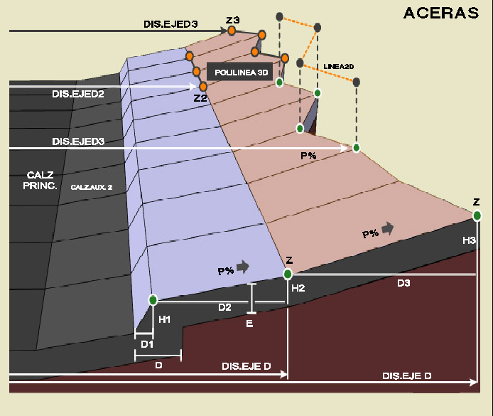
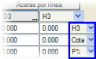
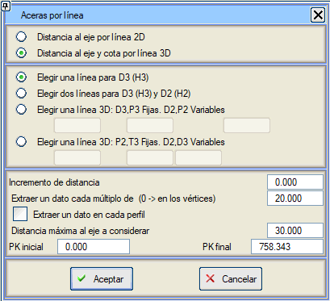
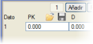

| |
|
YAYA YOLLARI
|
Bu menü, platforma bitişik yaya yollarını, tip kesitten bağımsız olarak, KM dizileri halinde tanımlamayı sağlar. 
Profil, göreli koordinatlarda üç segmentle (D1H1, D2H2, D3H3) tanımlanır. H1 değeri, göreli yükseklik veya mutlak kot olarak tanımlanabilir. D2 değeri, eksene olan mesafe olarak da verilebilir. H2 değeri, mutlak kot olarak veya yüzde eğim olarak da verilebilir. D2 noktası eksene olan mesafeyle tanımlandığında, bu mesafe bir geri gitme anlamına geliyorsa nokta eklenmez, ancak D3 noktasına, sanki D2 varmış gibi karşılık gelen kod korunur. D3 değeri, [D3] butonunu [D_eksen]'e değiştirerek, geometrik eksene olan mesafe olarak da verilebilir. Aynı şekilde, D_eksen değeri, Çizgiye Göre Yaya Yolları seçeneği ile bir 2D çizgiden de hesaplanabilir. Öte yandan, H3 değeri alternatif şekillerde verilebilir:
Son sütunun değeri (H3/Kot/E3%), her veri için ayrı ayrı özelleştirilebilir. Başlık daha sonra değiştirildiğinde, tüm veriler için aynı anda değiştirilir. Modu değiştiren genel veya bireysel seçici: H3/Kot/E3%, tüm verilerin veya bireysel verinin değerini geometriyi koruyarak yeniden hesaplar. Örneğin: D3, H3'ü bir 3D çizgi ile hesaplarsak, H3 değeri Mutlak Kot olarak ayarlanır. Bu segmentin eğimini görmek istersek bir veya tüm verileri E3'e veya önceki noktaya olan yüksekliği görmek istersek H3'e geçirebiliriz. Eğer Palye İptal kutucuğu işaretlenirse, o yaya yolu bölümünde Yarma veya Dolgu Palyelerinin yapımı engellenir. Eğer Kilitli kutucuğu işaretlenirse, satırın verileri, sütuna göre genel değişikliklerden etkilenmemeleri için kilitlenir: D, E, D1, H1, D2, H2, D3, H3 ve H3/Kot/E% modu. Bitişik kutucuk, bir veri aralığını kilitlemeyi/kilidini açmayı sağlar. Kod kutucuğu: Ardışık kodlar seçeneği etkinleştirilmediğinde, yaya yolunun ilk noktası için kod değerini tanımlamaya izin verir. (D_eksen, Kot) çifti, Çizgiye Göre Yaya Yolları seçeneği ile bir 3D çizgiden de hesaplanabilir. Görünen iletişim kutusu, D3(H3) değerleri için bir çizgi veya D3(H3) ve D2(H2) değerleri için iki çizgi seçmeyi sağlar. Çizgiler, sadece eksene olan mesafeyi hesaplamak için 2D olarak veya kotu da dikkate almak için 3D olarak kabul edilebilir. Bir 2D veya 3D çizgi kullanılması durumunda, geri kalan veriler listenin ilk verisinden kopyalanır (en az bir verinin olması gerekir). Eğer zaten önceki veriler varsa, sadece KM'leri çizginin tanım aralığı içinde olanlar silinir ve bunun yerine çizgiden çıkarılanlarla değiştirilir. Öte yandan, bir aralık belirtmek yerine sıfırın katı başına bir nokta hesaplamayı seçerseniz, program seçilen çizginin köşe noktalarında bir veri hesaplar. Bu son durumda, yaya yollarının KM'lerinde arazi profillerini enterpole etmek uygundur. Eğer Her profilde bir veri çıkar kutucuğu işaretlenirse, program enkesitin her bir profili için (hem aralığa göre seçilenler, hem de kullanıcı tarafından enterpole edilenler) bir veri hesaplar. Eksendeki arama KM'lerini sınırlama imkanımız var, bu da kendi üzerine dönen eksenlerdeki belirsizlikleri önlemeyi sağlar. Eğer D2 ve H2 için farklı değerlere sahip önceki veriler varsa, D3 ve H3'ü hesaplamak için Çizgiye Göre Yaya Yolları çalıştırıldığında, mevcut veriler korunur. Program, D3 ve H3 için yeni verileri şuralarda hesaplar:

Çizgiye Göre Yaya Yolları
Son nokta eksene olan mesafeyle tanımlandığında, bir KM'de önceki noktaya göre bir geri gitme anlamına geliyorsa eklenmez. (D2,H2) segmentinde, H2 yerine Mutlak Kot verildiğinde, bir veride D2=0 ve Z=0 değerleri görünürse ve ardından (D3,H3) için başka değerler varsa, o zaman 0 değeri mutlak kot olarak alınmaz ve geçersiz bir segment olarak kabul edilir. Alttemel iki parametre ile tanımlanır:
Ayrıca, aşağıdaki seçenekler de mevcuttur:
Yaya yolu tanım kuralı, [Kaydet]  ve [Yükle] ve [Yükle]  ile .acr uzantılı dosyalarda kaydedilebilir ve geri yüklenebilir (menünün üst kısmında bulunan simgeler). ile .acr uzantılı dosyalarda kaydedilebilir ve geri yüklenebilir (menünün üst kısmında bulunan simgeler).Yardımcı şeritlerin ve yaya yollarının tanım KM'lerinde, bağımsız .pk dosyalarına kaydedilebilir veya yüklenebilir , böylece KM tanımı bir taraftan diğerine, yaya yollarından yardımcı şeritlere ve tersine taşınabilir.KM'yi birinci sütunda içeren herhangi bir .pk* dosyasından yüklenebilirler. Bir KM dosyası yüklendiğinde, geri kalan değerler (genişlikler, eğimler, yükseklikler, vb.) ilk veriden kopyalanır. Yaya yolları durumunda eğer hiç veri yoksa, o zaman sıfır olarak başlatılırlar. |